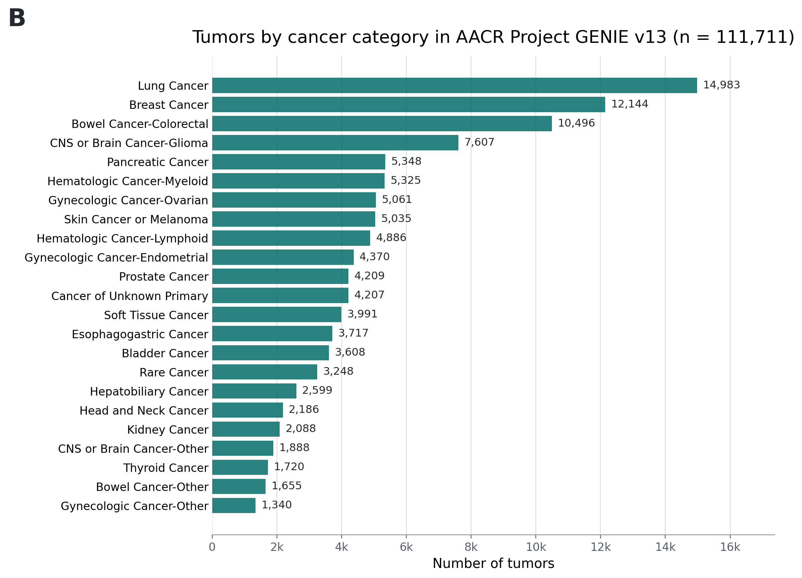
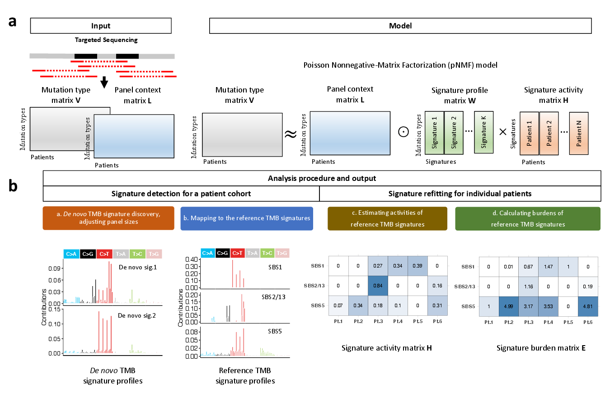

Signature Analyzer for Targeted Sequencing (SATS)
Signature Analyzer for Targeted Sequencing (SATS) is a panel-aware framework for mutational signature analysis in targeted sequencing data. It supports de novo signature detection, mapping to tumor mutational burden (TMB)-normalized reference signatures, individual-tumor refitting and signature-attributed mutation burden estimation.
National Cancer Institute (NCI) web tools
Interactive targeted-sequencing signature catalogue — single base substitution (SBS) and double base substitution (DBS) signature frequencies, etiologies and cancer-type patterns.
Online signature refitting tool — web interface for targeted sequencing signature refitting.
Study and catalogue overview
The accompanying manuscript applies SATS to 111,711 tumors from American Association for Cancer Research (AACR) Project GENIE (Genomics Evidence Neoplasia Information Exchange) version 13.0-public to construct a real-world, panel-calibrated pan-cancer catalogue of targeted sequencing-derived mutational signatures.

111,711tumors profiled by targeted sequencing
North America and Europereal-world clinical sequencing programs
26 SBS signaturessingle base substitution signatures detected across cancer categories
12 DBS signaturesdouble base substitution signatures detected from targeted sequencing data



Quick install
SATS is currently distributed from GitHub. The package was formerly available from the Comprehensive R Archive Network (CRAN), but the GitHub source tree is the recommended installation route for the current version.
if (!requireNamespace("devtools", quietly = TRUE))
install.packages("devtools")
devtools::install_github("binzhulab/SATS", subdir = "source", upgrade = "never")
library(SATS)Architecture and workflow
SATS separates panel-context generation, de novo signature detection, signature mapping, single-tumor refitting and burden calculation. This makes each analysis step explicit and reproducible.
Targeted sequencing data should not be analyzed as if all tumors shared the same mutation opportunity. SATS models the panel context directly, then estimates signatures and burdens on the targeted-sequencing scale.

Generate panel context. Use GeneratePanelSize() and GenerateLMatrix() to construct sample-level opportunity matrices.
Detect signatures. Estimate cohort-level profiles with signeR or another compatible extraction method using panel-adjusted opportunity counts.
Map and refit. Map de novo profiles to TMB-normalized Catalogue of Somatic Mutations in Cancer (COSMIC) reference signatures and refit signatures in individual tumors.
Calculate burdens. Use CalculateSignatureBurdens() to estimate signature-attributed mutation counts for each tumor.
Basic usage
Generate a panel-context matrix
data(SimData, package = "SATS")
Panel_context <- GeneratePanelSize(
genomic_information = SimData$PanelEx,
Class = "SBS",
SBS_order = "COSMIC",
ref.genome = "hg19"
)
L_mat <- GenerateLMatrix(Panel_context, SimData$PatientInfo)Estimate signature activity and burden
data(RefTMB, package = "SATS")
SBS.list <- c("SBS1", "SBS2_13", "SBS4", "SBS5", "SBS6", "SBS89")
W_star <- as.matrix(RefTMB$TMB_SBS_v3.4[, SBS.list])
H_hat <- EstimateSigActivity(V = SimData$V, L = SimData$L, W = W_star)
SigBdn <- CalculateSignatureBurdens(L = SimData$L, W = W_star, H = H_hat$H)Software quality
The repository includes unit tests, a minimal Nextflow example and a Dockerfile for building an R environment with SATS and its core genomic dependencies.
- Unit tests: cover
CalculateSignatureBurdens(),EstimateSigActivity()andGeneratePanelSize(). - Workflow template:
nextflow/example1callsGeneratePanelSize()on an input R data file. - Container setup: the Dockerfile installs SATS and required R/Bioconductor dependencies.
cd source
Rscript -e 'testthat::test_dir("tests/testthat")'Documentation and resources
User guide — installation, input format and example workflows.
Package manual — function-level R documentation.
Interactive catalogue — SBS and DBS signature frequencies and etiologies.
Online refitting tool — targeted sequencing signature refitting interface.
Citation
Lee et al., "A real-world pan-cancer catalogue of mutational signatures from 111,711 tumors" (submitted).